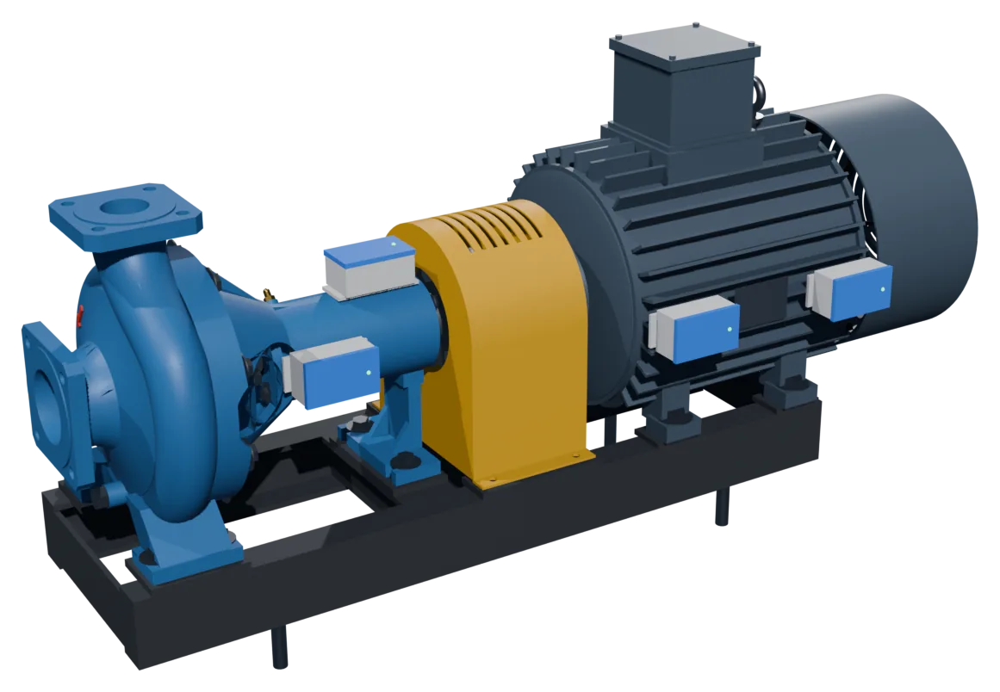

Насосний агрегат К80-50-200K80-50-200 pump unit
Консольний відцентровий насос із двигуном АИР160S2 на рамі, змодельований по деталях за кресленнями виробників. Розберіть його, подивіться, куди ставити датчики, які несправності вони бачать і як їх усувати крок за кроком.An end-suction centrifugal pump with an AIR160S2 motor on a base frame, modelled part by part from the manufacturers' drawings. Take it apart, see where the sensors go, which faults they catch and how to fix them step by step.
Поки без живого підключення: датчики показані на своїх місцях, а сигнатури несправностей — як еталон для аналітики.No live connection yet: sensors are shown in their places, and fault signatures serve as references for the analytics.

Норми виробника і частоти, на які дивиться FlowbitManufacturer limits and the frequencies Flowbit watches
Межі взято з настанови з експлуатації Ливгидромаш на К80-50-200 (виконання -Е). Для загальнопромислового насоса з сальником це найближчий офіційний орієнтир; паспорт вашого насоса має пріоритет.Limits are from the Livgidromash operating manual for the K80-50-200 (-E version). For the general-purpose packed pump this is the closest official reference; your pump's own passport takes priority.
| ЩоWhat | МежаLimit | Пункт РЕManual § |
|---|---|---|
| Вібрація підшипникових вузлів, СКЗ швидкостіBearing housing vibration, RMS velocity | ≤ 4,5 мм/сmm/s | дод. АApp. A |
| Понад норму — усунути причину заAbove the limit — fix the cause within | 30 дібdays | дод. АApp. A |
| Понад 7,1 мм/с — працювати не довшеAbove 7.1 mm/s — run no longer than | 7 дібdays | дод. АApp. A |
| Аварійне відключення за вібрацієюVibration trip | 11,2 мм/сmm/s | 3.6.3 |
| Вібрація в місцях кріплення до фундаментуVibration at the foundation fixings | ≤ 2,8 мм/сmm/s | дод. АApp. A |
| Температура підшипниківBearing temperature | ≤ 90 °C, ≤ tповair + 50 °C | 3.2.2 |
| Мастило підшипниківBearing grease | Літол-24, 0,04 кг; через 100 год у перший місяць, далі кожні 1000 годLitol-24, 0.04 kg; after 100 h in the first month, then every 1000 h | 4.3.3 |
| Центрування валів (розбіжність показів індикатора)Shaft alignment (dial indicator spread) | ≤ 0,12 ммmm | 2.3.10 |
| Непаралельність фланців трубопроводівPipe flange non-parallelism | ≤ 0,15 мм на 100 ммmm per 100 mm | 2.3.4 |
| Робота на закриту засувкуRunning against a closed valve | ≤ 2 хвmin | 3.4.4 |
| Опір ізоляції двигуна (мегомметр 500 В)Motor insulation resistance (500 V megger) | ≥ 1 МОмMΩ | 2.3.5 |
| Ресурс до капремонту / наробіток на відмовуLife to overhaul / mean time to failure | 24 000 / 12 000 годh | 5 |
| Частота (2900 об/хв)Frequency (2900 rpm) | ГцHz | Що означаєMeaning |
|---|---|---|
| 1× · 2× · 3× | 48,3 · 96,7 · 145 | дисбаланс, розцентрування, ослабленняunbalance, misalignment, looseness |
| ½× | 24,2 | сильне ослаблення, тертяsevere looseness, rubbing |
| 2× мережі2× line | 100 | статор, несиметрія живленняstator, supply unbalance |
| Бічні смуги ±fp біля 1×±fp sidebands at 1× | ± 3,3 | стрижні ротора двигунаmotor rotor bars |
| 306: FTF · BSF · BPFO | 18,6 · 100 · 149 | сепаратор, кульки, зовнішнє кільцеcage, balls, outer race |
| 306: BPFI | 238 W | внутрішнє кільце — поза смугою Einner race — outside the E band |
| 6309: FTF · BSF · BPFO | 18,4 · 94,5 · 147 | підшипники двигуна (типово 6309)motor bearings (typically 6309) |
| Лопатева 6× / пальці муфти 6×Vane pass 6× / coupling pins 6× | 290 W | гідравліка, щілинне кільце, муфтаhydraulics, wear ring, coupling |
Flowbit E: тривісний акселерометр, 400 вимірів/с, аналіз 2–160 Гц, FFT на 512 точок — 0,78 Гц на бін, тож 145 Гц (3×) і 149 Гц (BPFO) розрізняються. Позначка W — частоти для широкосмугового Flowbit W.Flowbit E: 3-axis accelerometer, 400 samples/s, analysis 2–160 Hz, 512-point FFT — 0.78 Hz per bin, so 145 Hz (3×) and 149 Hz (BPFO) are told apart. W marks frequencies for the wideband Flowbit W.
ДжерелаSources
Модель зібрана параметрично в Blender за розмірами з цих документів. Розміри, яких у документах немає (товщини стінок, ребра, деталі двигуна), оцінені за пропорціями креслень. Модель — для навчання й демонстрації, вона не замінює паспорт насоса.The model was built parametrically in Blender from the sizes in these documents. Sizes the documents do not give (wall thickness, ribs, motor details) were estimated from the drawings' proportions. The model is for training and demonstration and does not replace the pump's passport.
- Укрнасоссервіс — каталог насосів типу К — габарити насоса й агрегату з АИР160S2, фланці, робоче колесоpump and unit dimensions with AIR160S2, flanges, impeller
- ГМС Ливгидромаш — РЕ Н49.917.00.000 «Насос К 80-50-200-Е» — розріз, габаритне креслення, норми вібрації й температури, мастило, центрування, порядок розбиранняsection, outline drawing, vibration and temperature limits, grease, alignment, disassembly order
- «Ремонт центробежного насоса К-80-50-200» — порядок розбирання варіанта з сальником, нагрів підшипників до 80–90 °C, обкаткаdisassembly order of the packed version, heating bearings to 80–90 °C, run-in
- NSK 6306 · NTN-SNR 6306 — 8 кульок Ø11,906 мм, частоти дефектів BPFO 3,084 і BPFI 4,916 на оберт8 balls Ø11.906 mm, defect factors BPFO 3.084 and BPFI 4.916 per revolution
- Запчастини К80-50-200 — підшипник 306, напівмуфти ПН140 і ПД140bearing 306, coupling halves PN140 and PD140
- АИР — технічні дані — кінець вала Ø42×110, лапи 254×178, висота осі 160shaft end Ø42×110, feet 254×178, shaft height 160
- Chesterton · Pumps & Systems — укладання набивки: косий різ, зміщення стиків, поступове підтягуванняpacking installation: skive cut, staggered joints, gradual adjustment